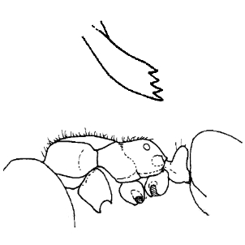
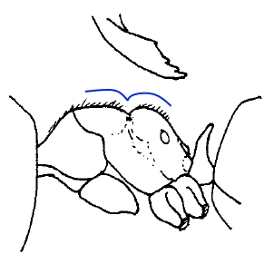

Rhyzomyrma Subgenus: part 2


Terayama 2002

- Japan (Ischigaki-jima Is.)


Terayama 2002
- Japan (Ischigaki-jima Is., Iriomote-jima Is.)


Terayama 2002
- China (Guanxi)


Terayama 2002
- China (Yunnan)